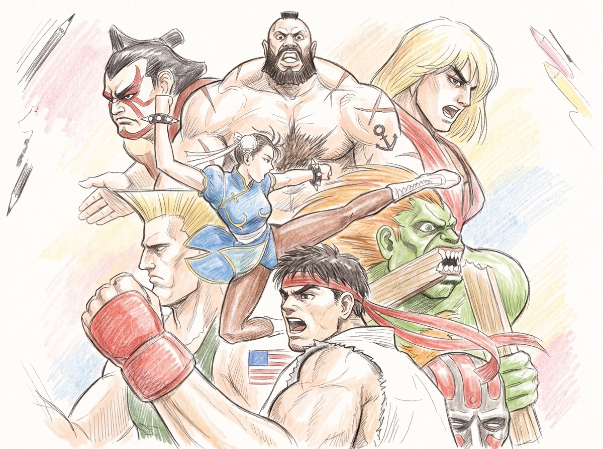
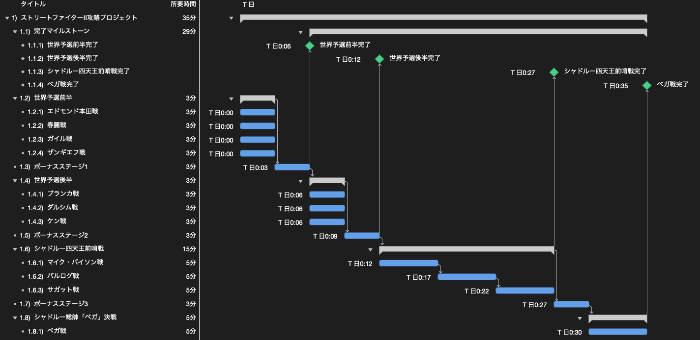
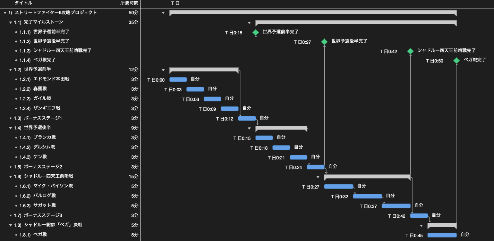

アーケード版「ストリートファイターⅡ」をクリアするWBSを作ってみた
今回は「WBSで覗いてみた」シリーズとして、「アーケード版『ストリートファイターⅡ』をクリアするWBS」を作成しました。
1991年に稼働開始した本作は、対戦格闘ゲームの基礎を確立した作品です。今回は、各技のコマンド入力や間合い管理を習得済みの熟練プレイヤー（使用キャラクター：リュウ）が、1コイン・ノーコンティニューでシャドルー総帥である最終ボス「ベガ」を撃破し、エンディングを迎えるまでの全工程をWBSに分解し、所要時間やガントチャートの構造を検証しました。

プレイヤーの技量習得に関わる基礎訓練は前提条件（保有アセット）として除外しており、コイン投入からゲームクリアまでの実戦工程のみを対象としています。
1. ガントチャートと工数の検証
全体のタスクは、世界予選前半、世界予選後半、シャドルー四天王前哨戦、そして最終決戦の4つのフェーズと3つのボーナスステージで構成されています。これらをプロジェクト管理ツール（OmniPlan）を用いてガントチャートに展開しました。
リソース割り当てなしの場合（所要時間：35分）
まずは、純粋なタスク間の先行・後続関係のみを反映したガントチャートです。世界予選の各対戦は論理的な順序依存がないため並行処理として展開され、全体の理論最短所要時間は35分となります。

工程の内訳としては、エドモンド本田、春麗、ガイル、ザンギエフとの4連戦および車破壊のボーナスステージ1で構成される世界予選前半から始まります。続く世界予選後半ではブランカ、ダルシム、同門であるケンとの対戦を経て木樽破壊のボーナスステージ2へ進みます。その後、マイク・バイソン、バルログ、サガットの四天王前哨戦と炎ドラム缶のボーナスステージ3を通過し、最終ボスのベガ戦に至る構成です。
2. リソースの平準化と実働時間
先ほどのガントチャートはタスクの論理的依存関係のみを示したものであり、実際のプレイでは1名のプレイヤーが1台の筐体を操作します。そこで、リソースとして「自分（1名）」を割り当て、作業の重複を解消する平準化を行いました。
平準化後のスケジュール（所要時間：約50分）
1名のリソース制約を適用した結果、並行可能とみなされていた予選の各対戦がすべて直列に配置され、全体の所要時間は約50分（53分）となりました。

予選の対戦および各ボーナスステージはそれぞれ3分、四天王の各戦いは5分の標準工数を設定しています。平準化を行うことで、理論最短の35分から約15分の差が生じ、1名体制における現実的な所要時間が明確になります。
3. まとめ
今回は、アーケード版『ストリートファイターⅡ』を題材に、1コインクリアまでの工程をWBSに分解し、所要時間や平準化の影響を検証しました。
タスクの依存関係だけを見れば35分で完了するように見える計画も、担当リソースが1名に制限されることで約50分の直列処理へと変化します。このように、論理的な作業フローだけでなく、リソースの制約を加味して平準化を行うことで、初めて現実的な実行計画が見えてきます。
また、今回の検証ではプレイヤーの技量がすでに確立されていることを前提としましたが、実務のプロジェクトにおいても、担当者のスキルや既存アセットの有無が全体の工数や不確実性に大きく影響します。計画を立てる際には、作業そのものの分解と同時に、それを実行するリソースの前提条件を正しく見極めることが重要です。
プロジェクト計画の基礎となるWBSの作り方や平準化の考え方について詳しく知りたい方は、「WBSの勘所」や「ガントチャートの決め手は平準化」もぜひ合わせてご覧ください。